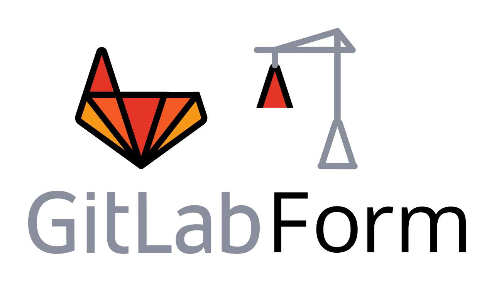

Index



GitLabForm is a specialized configuration-as-code tool for GitLab:
- application settings,
- groups,
- projects,
...and more using hierarchical configuration written in YAML.
Why?¶
Short and powerful syntax¶
A lot of features with a little amount of YAML thanks to the hierarchical configuration with inheritance, merging/overwriting and additivity .
projects_and_groups:
# configuration shared by all projects in a group named 'a_group'...
a_group/*:
merge_requests_approvals:
disable_overriding_approvers_per_merge_request: true
# ...except this project that has a different config:
a_group/a_special_project:
merge_requests_approvals:
disable_overriding_approvers_per_merge_request: false
Dynamic features¶
GitLab introduces new features monthly. You can often use them in GitLabForm without upgrading the app because we pass some parameters as-is to GitLab APIs with PUT/POST requests.
projects_and_groups:
a_group/a_project:
project_settings:
# ALL the keys described at
# https://docs.gitlab.com/ee/api/projects.html#edit-project
# can be provided here
Stability¶
We treat our users the way we would like to be treated by other software projects maintainers:
- We follow semver and don't allow existing features behavior changes in minor or patch versions.
- Before changing the syntax we start printing deprecation warnings in the versions before.
- We use versioning of the configuration syntax for major changes and provide step-by-step upgrade guidelines.
Quick start¶
Let's assume that you want to add a deployment key to all projects in a group "My Group" (with path "my-group"). If so then:
-
Create a
config.ymlfile with:config_version: 3 gitlab: url: https://gitlab.yourcompany.com # alternatively use the GITLAB_TOKEN environment variable for this token: "<private token OR an OAuth2 access token of an admin user>" projects_and_groups: my-group/*: deploy_keys: a_friendly_deploy_key_name: # this name is only used in GitLabForm config key: ssh-rsa AAAAB3NzaC1yc2EAAAADAQABAAABAQC3WiHAsm2UTz2dU1vKFYUGfHI1p5fIv84BbtV/9jAKvZhVHDqMa07PgVtkttjvDC8bA1kezhOBKcO0KNzVoDp0ENq7WLxFyLFMQ9USf8LmOY70uV/l8Gpcn1ZT7zRBdEzUUgF/PjZukqVtuHqf9TCO8Ekvjag9XRfVNadKs25rbL60oqpIpEUqAbmQ4j6GFcfBBBPuVlKfidI6O039dAnDUsmeafwCOhEvQmF+N5Diauw3Mk+9TMKNlOWM+pO2DKxX9LLLWGVA9Dqr6dWY0eHjWKUmk2B1h1HYW+aUyoWX2TGsVX9DlNY7CKiQGsL5MRH9IXKMQ8cfMweKoEcwSSXJ title: ssh_key_name_that_is_shown_in_gitlab can_push: falseAlternatively, create a
config.ymlfile with settingGITLAB_URL&GITLAB_TOKENas environment variablesconfig_version: 3 projects_and_groups: my-group/*: deploy_keys: a_friendly_deploy_key_name: # this name is only used in GitLabForm config key: ssh-rsa AAAAB3NzaC1yc2EAAAADAQABAAABAQC3WiHAsm2UTz2dU1vKFYUGfHI1p5fIv84BbtV/9jAKvZhVHDqMa07PgVtkttjvDC8bA1kezhOBKcO0KNzVoDp0ENq7WLxFyLFMQ9USf8LmOY70uV/l8Gpcn1ZT7zRBdEzUUgF/PjZukqVtuHqf9TCO8Ekvjag9XRfVNadKs25rbL60oqpIpEUqAbmQ4j6GFcfBBBPuVlKfidI6O039dAnDUsmeafwCOhEvQmF+N5Diauw3Mk+9TMKNlOWM+pO2DKxX9LLLWGVA9Dqr6dWY0eHjWKUmk2B1h1HYW+aUyoWX2TGsVX9DlNY7CKiQGsL5MRH9IXKMQ8cfMweKoEcwSSXJ title: ssh_key_name_that_is_shown_in_gitlab can_push: false -
Run:
docker run -it -v $(pwd):/config ghcr.io/gitlabform/gitlabform:latest gitlabform my-group - Watch GitLabForm add this deploy key to all projects in "My Group" group in your GitLab!
Used by¶
...and many more!
License¶
The app code is licensed under the MIT license.
A few scripts in dev/ directory are licensed under the MPL 2.0 license.
GitLab is a registered trademark of GitLab, Inc. This application is not endorsed by GitLab and is not affiliated with GitLab in any way.
The GitLabForm logo is based on the GitLab logos available here, and like the original art is licensed under the Creative Commons Attribution Non-Commercial ShareAlike 4.0 International License.
All the logos shown in the "Home" section of this documentation belong to their respective owners.